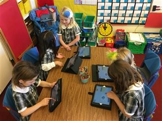

Hamlin girls code! The Hamlin School is dedicated to teaching girls programming skills starting in Kindergarten. In Lower School, students are introduced to computational thinking using iPad apps such Kodable, Scratch Jr, and Lightbot. They later experiment with block-based programming languages like Hopscotch, Blockly, and Scratch.
